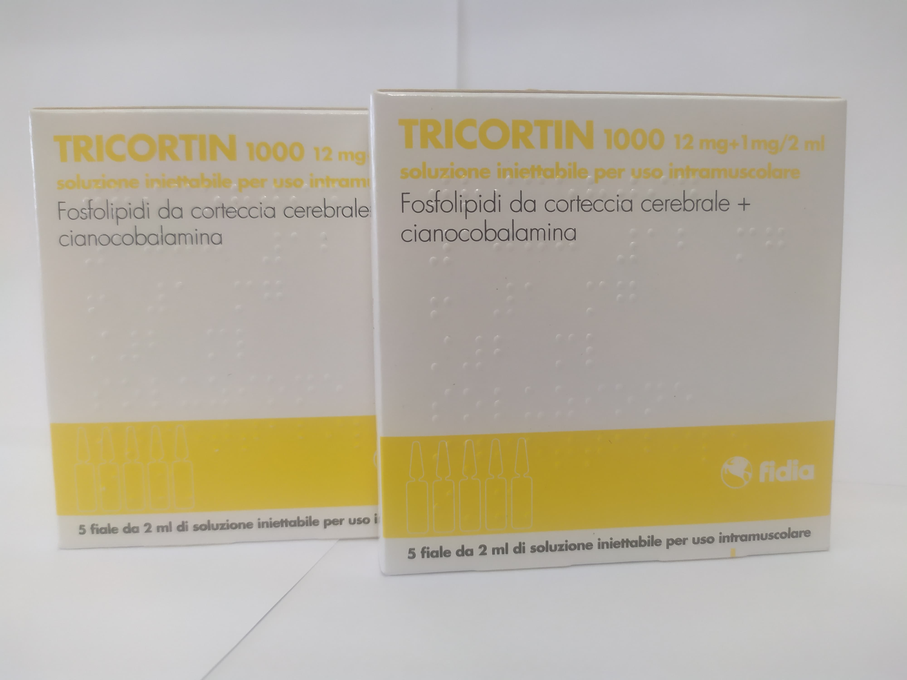

Контактная информация:
Цена: 750 грн/уп.
В наличии
Производитель: Италия
Цена: 750 грн/уп.
В наличии
Именно в FarmItal вы можете купить ампулы Трикортин,Tricortin в Украине, Гарантированно Качественный!
Доставка Tricortin осуществляется транспортными компаниями, сроки выполнения заказа оговариваются менеджером Фармитал. Вы можете заказать Трикортин в городах: Одесса, Херсон, Чернигов, Северодонецк, Бердянск, Бровары, Днепр, Винница, Киев, Славянск, Полтава, Краматорск, Белая Церковь, Каменское, Мариуполь, Черновцы, Александрия, Каменец- Подольский, Львов, Запорожье, Кропивницкий, Житомир, Ивано-Франковск, Сумы, Черкассы, Константиновка, Мелитополь, Кривой Рог, Ровно, Луцк, Никополь, Павлоград, Ужгород, Кременчуг, Лисичанск, Хмельницкий, Тернополь, Харьков, Николаев, а также других населенных пунктах Украины.
Причина возникновения неврозов в нарушении психической стабильности современного человека. Препарат Трикортин входит в группу ноотропов и позволяет справиться с неврозами различной этиологии. Трикортин не влияет на функциональность других органов и систем и не вредит их работе. В состав Трикотрина 1000 входят фосфолипиды, цианокобаламин (витамин В12) и дополнительные эфиры. Такой компонентный состав способен восстановить нарушенные функции головного мозга. Парентеральное (внутримышечное) введение фосфолипидов из коры головного мозга свиньи (фосфолипиды neuromologhi) способно активировать метаболизм нейронов человека путем нормализации ферментативной активности, увеличить оборот нейромедиаторов, а также улучшить метаболизм глюкозы и эндогенных фосфолипидов. Цианокобаламин (витамин В12) обладает высокой биологической активностью, участвует не только в углеводном, белковом и липидном обмене, но также и в метаболизме нервных клеток. Повышает регенерацию тканей, нормализует кроветворение, функции печени и нервной системы. Фосфолипиды парентерально отмечают вдвойне метаболизм и стабильность, была изучена и дана оценка общей радиоактивности в мозге, эволюции на клеточном уровне.
Вводится по 2 мл внутримышечно один раз в сутки по указанию врача. Курс лечения: 15-20 дней.
Не было сообщено о каких-либо побочных эффектах, которые могут быть отнесены к этому препарату.
Хранить в недоступном для детей месте.Хранить при температуре не выше 25 °C.